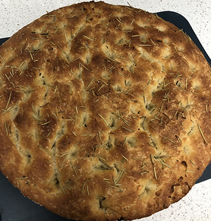

Focaccia

Description
Focaccia. All these Italian dishes are making me hungry. I don’t know when the Italians typically eat focaccia, but I assume they eat it at all the time because that is what I would do.
Easy to make and even easier to eat. Give this no knead focaccia a try. I used a large cast-iron pan for this amount of ingredients.
Ingredients
- All-purpose flour 360g
- Instant Yeast 6g
- Lukewarm Water 354g
- Salt to taste
- Olive Oil
Steps
- In a large bowl mix the flour, yeast, and salt together. Add the water and mix. Form into a sticky dough ball.
- Remove from fridge and place in pan lightly oiled pan that will be used for cooking.
- Let sit at room temperature for 2-4 hours or until it has spread out in the pan.
- When it is about ready, turn on your oven to preheat 220C.
- Once preheated, dimple the focaccia with your fingers.
- Place in oven and bake for 25-30 minutes.
- Remove and let it sit 10 minutes before cutting. Patience.